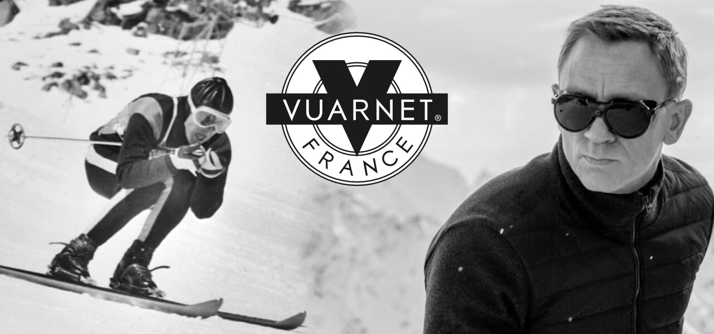
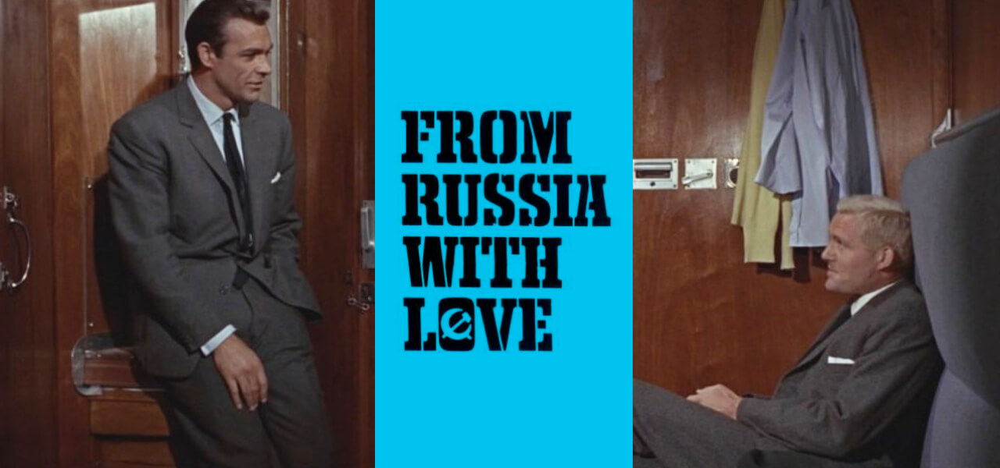

COULOIR | Issue 001
The remarkable and tragic life of Jean Vuarnet
Jean Vuarnet was a French Alpine ski racer and the first man to win Olympic gold on metal rather than wooden skis. He later spearheaded the development of the first car-free ski resort in France and launched an eponymous line of sunglasses and other apparel. His wife and son became members of an apocalyptic cult that ended in tragedy in the mountains near Grenoble.
Born in the Tunisian capital of Tunis in 1933, Jean Vuarnet grew up in the ski town of Morzine, part of France's Haute-Savoie region, but spent much of his youth in the cities of Grenoble and Annemasse. He learnt most of his ski technique during school holidays and had to supplement this by observing the top skiers at work. These observations saw him develop an aerodynamic stance and ski positioning which would later help him take gold at the Squaw Valley Olympics in 1960. After his victory, Jean married Edith Bonlieu, and upon his return was inundated with job offers, choosing to become the head of tourism for Morzine. He then partnered with a sunglasses manufacturer to launch Vuarnet, which after a slow start, found fame in the 80s with the likes of Mick Jagger wearing them. In a link to a later Bond in the Alps segment, Daniel Craig wears a pair of Vuarnet glacier sunglasses in the movie SPECTRE.
While working for Morzine Tourism, Jean and Gerard Bremon developed a plan to build the resort of Avoriaz, high on the cliffs above Morzine. He also somehow found time to manage the Italian ski team for a while. Jean's busy life meant he'd spent little time with his family or raising his three boys; Pierre, Patrick and Alain. The only time the family spent together was during extended summer vacations. All this didn't slow Jean down though and the 1980s saw Jean start a book publishing company which by the 1990s had turned into a retail empire - Vuarnet International.
Things took a turn in October 1994 when two journalists showed up at his door with news that his wife Edith and the youngest son Patrick, had joined an apocalyptic cult - the Order of the Solar Temple. The order was responsible for mass suicides in Switzerland and Canada, where the bodies of 53 members were found dead and partially burned. Inspired by the Knights Templar, the order was founded by an osteopath Luc Jourret and Joseph Di Mambro, a jeweller. Both died in the incidents.
Jean spent the next year trying to persuade Edith and Patrick to leave the order but tragically, during Christmas 1995, the charred remains of 14 victims including Edith and Patrick were found in the forests of the Vercors. Investigators said a police officer, Jean-Pierre Lardanchet and Swiss architect André Friedli shot and arranged them in a star formation, before dousing the bodies with gasoline and setting them alight. They then killed themselves. Autopsies showed that most of the victims had taken sleep-inducing drugs. Despite a public outcry and civil lawsuits, Michel Tabachnik, a Swiss conductor thought to be the Order's leader at the time, was acquitted.
Jean Vuarnet later married Christine who died of a heart attack in 2012. Jean died in 2017 aged 83. Michel Tabachnik maintains his innocence and continues his work as a musical conductor today.
Bond in the Alps
James Bond was created in 1952 by the author Ian Fleming for the novel Casino Royale. Fleming was born in 1908 and was educated at Eton and Sandhurst in the UK before going to Austria to attend the Tennerhof School in Kitzbühel, Munich University in Germany and the University of Geneva in Switzerland. This time spent in the Alps gave him a love for the mountains and made him an accomplished skier.
Fleming joined the Royal Navy shortly before the Second World War and worked for the Naval Intelligence Division (NID) where he had oversight of two intelligence units - 30 Assault Unit and T-Force.
Fleming's time in NID was the inspiration for ten James Bond novels and a series of short stories. Two of his novels were made into films before Fleming died, aged 56.
From Russia with Love
It was five books in before the Alps made an appearance in the Bond novels. In From Russia with Love Bond reminisces about his youth:
Lunch came. Bond put aside his book and the thoughts that kept coming between him and the printed page, and, while he ate, he gazed down at the cool mirror of the Lake of Geneva. As the pine forests began to climb towards the snow patches between the beautifully scoured teeth of the Alps, he remembered early skiing holidays. The plane skirted the great eye-tooth of Mont Blanc, a few hundred yards to port, and Bond looked down at the dirty grey elephant's skin of the glaciers and saw himself again, a young man in his teens, with the leading end of the rope round his waist, bracing himself against the top of a rock-chimney on the Aiguilles Rouges as his two companions from the University of Geneva inched up the smooth rock towards him
The Aiguilles Rouges would make another more poignant appearance in You Only Live Twice later in the series. Towards the end of the book Bond takes the Simplon-Orient Express train through Switzerland. Fleming had taken this journey himself, although he didn't rate it as the restaurant car was closed - the nerve! You can still take the journey today as part of the Venice Simplon-Orient-Express - a private luxury train service from London to Venice. You could also take one of the daily Swiss trains that use the Simplon tunnel to Italy for a cheaper but less glamorous option.
The film of the book was made in 1963 and was the second in the series after Dr No. In it, Bond is played by Sean Connery who doesn't have time for daydreaming about the Alps. He does take the Orient Express train but in the other direction - from Istanbul to Venice past the Slovenian and Italian Alps. Bond only makes it to Trieste though thanks to Captain Nash - played by Robert Harris - who is an imposter with a bad accent. Sorry old man. Bond leaves the train and fends off a helicopter in what should be the pre-Alps but the scene was filmed in Scotland thanks to film grants. Bond does end up in Venice for the closing scenes.
Interesting links
- Tracking the Locations of J.G. Ballard’s Super-Cannes
- Martijn Doolaard - Life at the cabin
- The Architecture of Avoriaz, France
Subscriber offer
- Get 20% off the Chamonix Travel Guide by using code CTG22 at checkout.
- Get a great deal on your next trip with Booking.com
Subscribe to COULOIR